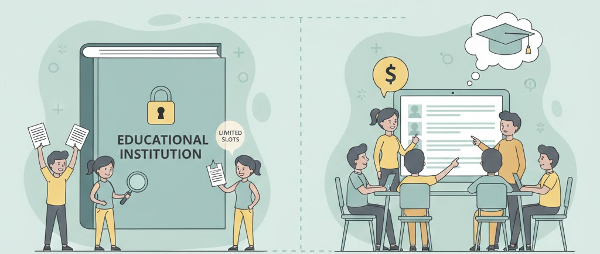
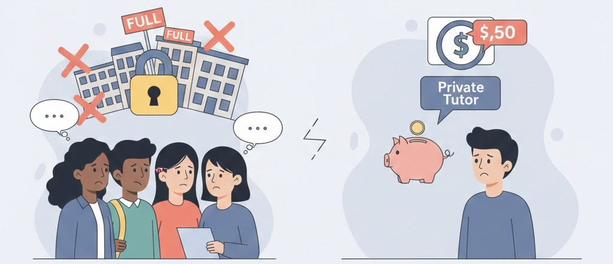
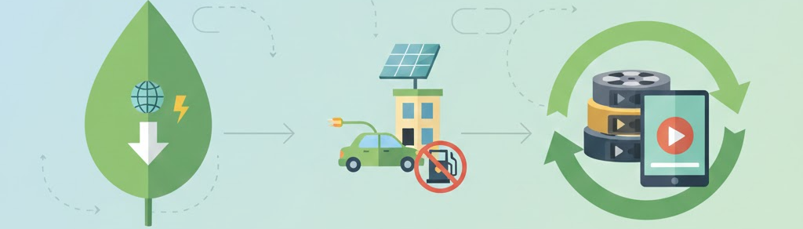
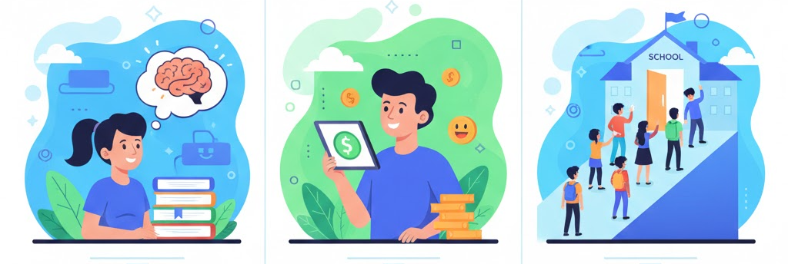

¿Cómo funciona actualmente el modelo de producción y consumo en este sector?
Actualmente los alumnos deben estar inscritos y conseguir una plaza en el nivel educativo correspondiente o contratar profesores particulares.

¿Qué problemas presenta ese modelo clásico?
El problema es que muchos alumnos no son capaces de llevar el curso sin ayuda externa, lo que genera una búsqueda de profesores particulares la cual puede ser difícil o costosa, además los profesores pueden sentir que no están ganando un sueldo acorde a sus conocimientos o simplemente querer ganar más.

¿Qué principios de la economía circular aplica vuestro producto o servicio?
- Reducción de consumo de recursos e impacto ambiental.
- Reducción de consumo energético, transporte y materiales.
- Reciclado de grabaciones como material de repaso.

¿Qué beneficios aporta frente al modelo tradicional?
- Permite a los alumnos una mejora de su educación de manera rápida y sin coste alguno.
- Permite a los profesores una ganancia extra.
- Favorece la educación equalitaria y disminuye las desigualdades.
- Permite el acceso a la educación a aquellos estudiantes que no puedan haber obtenido una plaza en determinados estudios.
